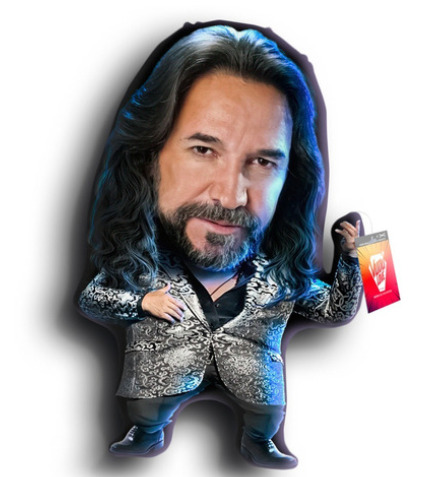

Testing estructura #1
Si te he fallado, te pido perdón de la única forma que sé.
Abriendo las puertas de mi corazón, para cuando decidas volver.
Porque nunca habrá nadie que pueda llenar el vacío que dejaste en mí.
Has cambiado mi vida, me has hecho crecer, es que no soy el mismo de ayer.
Un día es un siglo sin ti...
Testing estructura #2
La gente pasa y pasa siempre tan igual.
El ritmo de la vida me parece mal.
Era tan diferente cuando estabas tú.
Sí que era diferente cuando estabas tú.
No hay nada más difícil que vivir sin ti.
Sufriendo en la espera de verte llegar.
El frío de mi cuerpo pregunta por ti, y no sé dónde estás.
Si no te hubieras ido, sería tan feliz.
